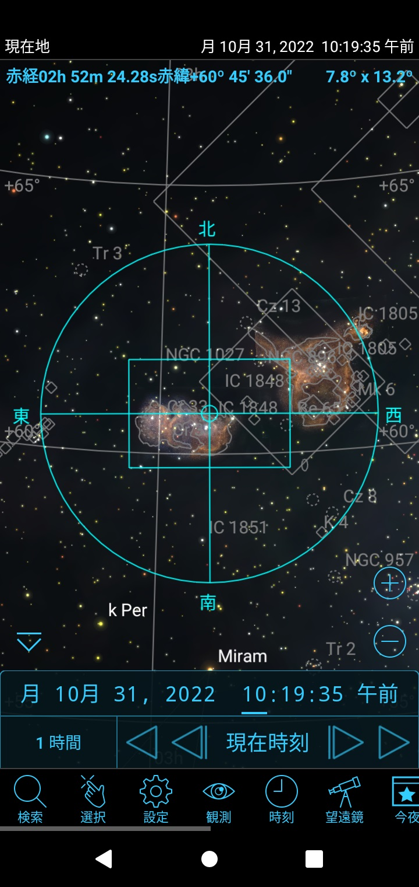
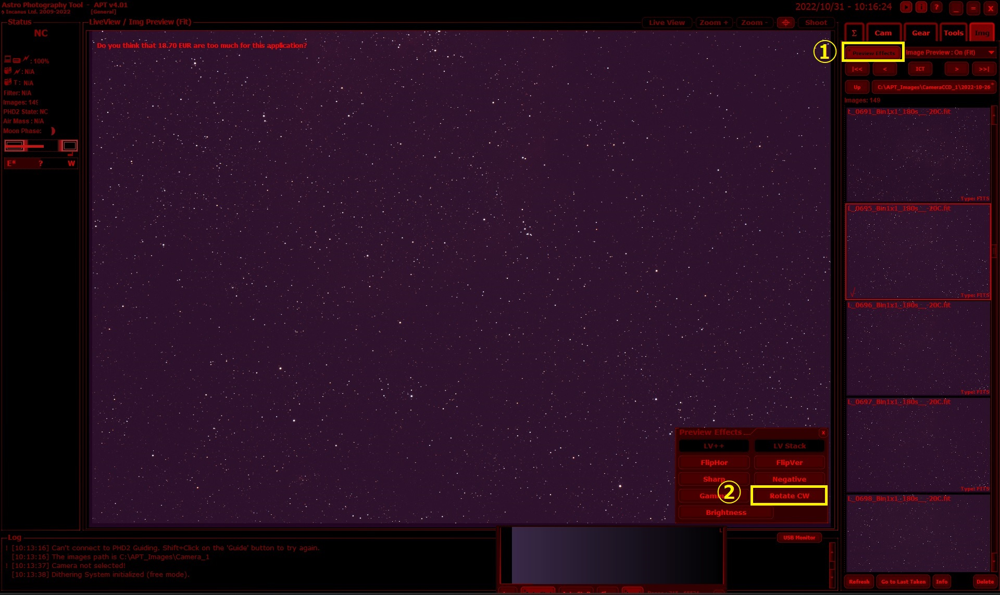
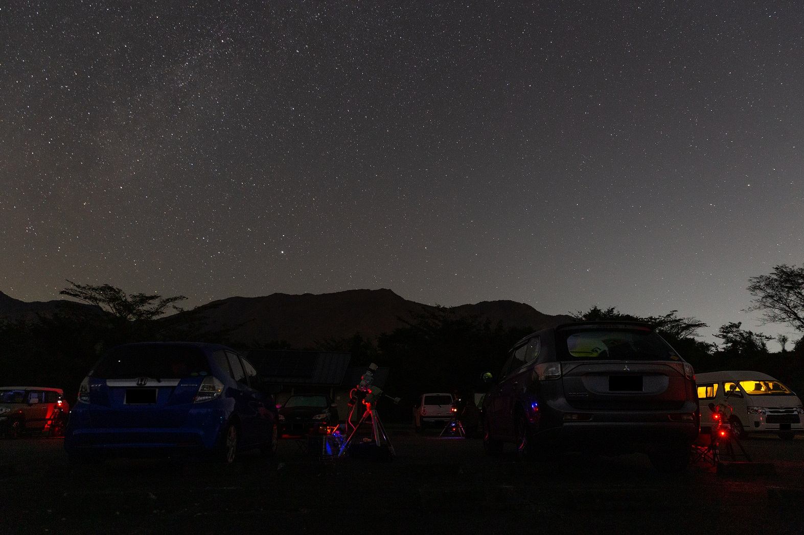
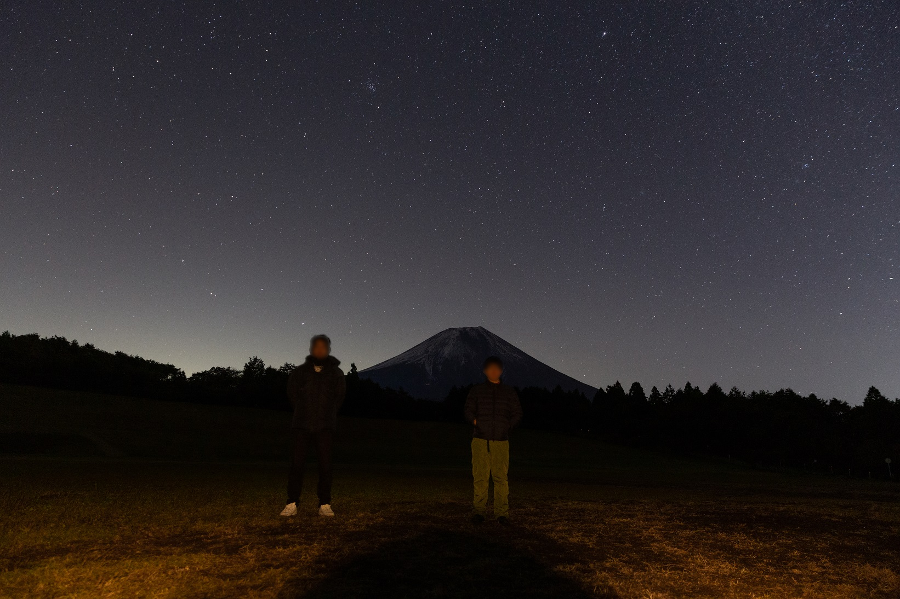
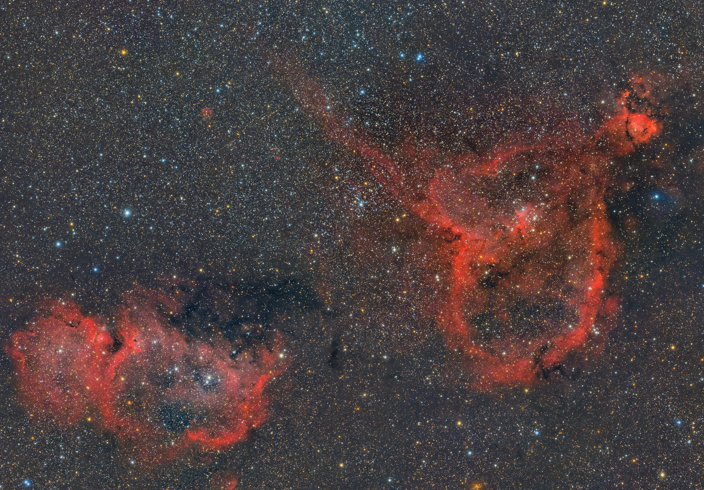
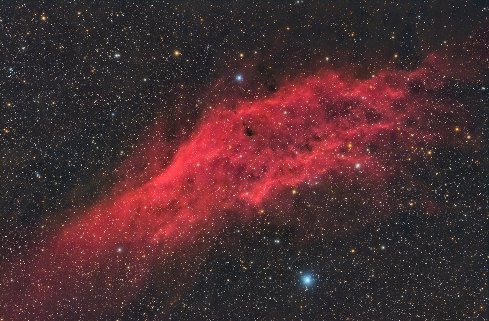
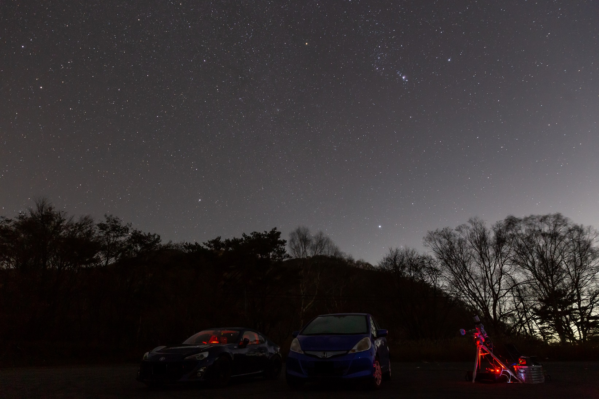
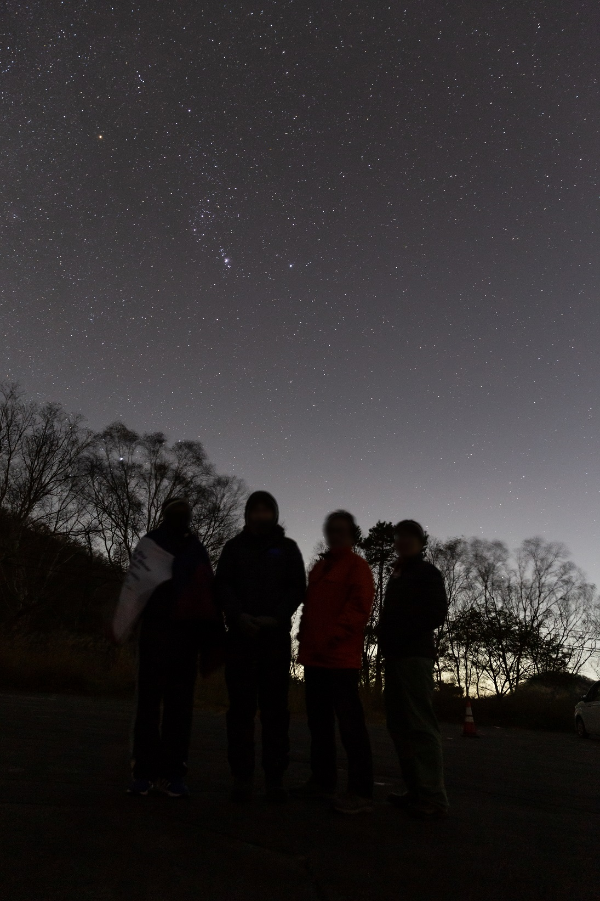
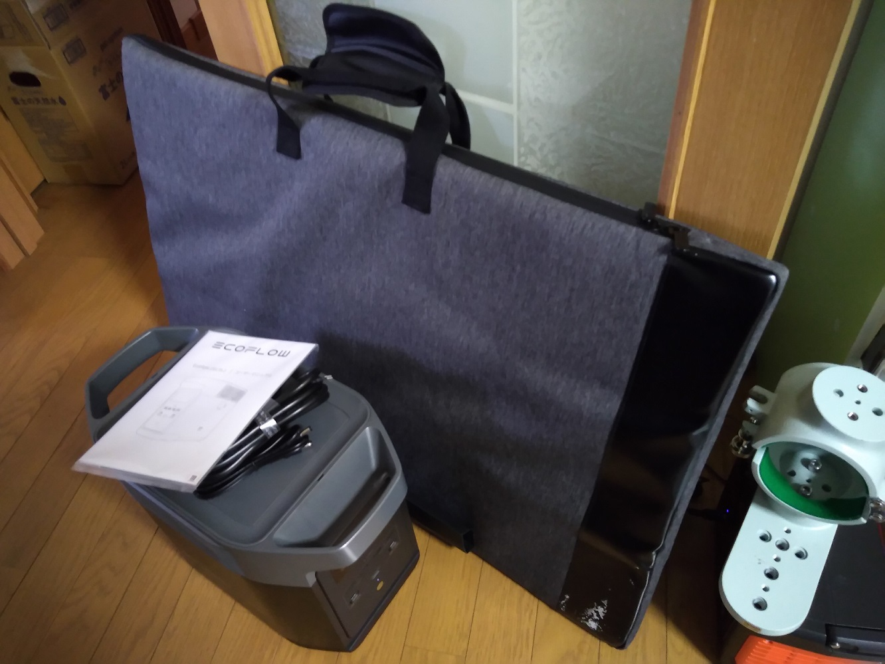

<!DOCTYPE html>
<html>

<head><meta name="generator" content="Hexo 3.8.0">
  <meta charset="utf-8">
  
    <title>
      
        10月後半遠征 | 
            ほしよみ大学生のブログ
    </title>
    <meta name="viewport" content="width=device-width">
    <meta name="description" content="あいさつこんにちは．10月後半も，晴天のもと出撃できるかもしれないチャンスが訪れたので，星撮りに遠征へ行きました．">
<meta name="keywords" content="天体写真,赤道儀,遠征記">
<meta property="og:type" content="article">
<meta property="og:title" content="10月後半遠征">
<meta property="og:url" content="http://dabokun.github.io/2022/10/30/00000068-asagiri-akagi/index.html">
<meta property="og:site_name" content="ほしよみ大学生のブログ">
<meta property="og:description" content="あいさつこんにちは．10月後半も，晴天のもと出撃できるかもしれないチャンスが訪れたので，星撮りに遠征へ行きました．">
<meta property="og:locale" content="ja">
<meta property="og:image" content="http://dabokun.github.io/2022/10/30/00000068-asagiri-akagi/card.jpg">
<meta property="og:updated_time" content="2022-10-31T14:31:21.757Z">
<meta name="twitter:card" content="summary_large_image">
<meta name="twitter:title" content="10月後半遠征">
<meta name="twitter:description" content="あいさつこんにちは．10月後半も，晴天のもと出撃できるかもしれないチャンスが訪れたので，星撮りに遠征へ行きました．">
<meta name="twitter:image" content="http://dabokun.github.io/2022/10/30/00000068-asagiri-akagi/card.jpg">
<meta name="twitter:creator" content="@dabo_pic">
      
        <link rel="alternative" href="/atom.xml" title="ほしよみ大学生のブログ" type="application/atom+xml">
        
          
            <link rel="icon" href="/images/favicon.png">
            
              <link rel="stylesheet" href="/css/style.css">
                <!--[if lt IE 9]><script src="//html5shiv.googlecode.com/svn/trunk/html5.js"></script><![endif]-->
                
                  <script data-ad-client="ca-pub-1350688970555904" async src="https://pagead2.googlesyndication.com/pagead/js/adsbygoogle.js"></script>
</head></html>
<body>
  <div id="container">
    <div class="mobile-nav-panel">
	<i class="icon-reorder icon-large"></i>
</div>
<header id="header">
	<h1 class="blog-title">
		<a href="/">ほしよみ大学生のブログ</a>
	</h1>
	<nav class="nav">
		<ul>
			<li><a href="/">Home</a></li><li><a href="/categories">Categories</a></li><li><a href="/tags">Tags</a></li><li><a href="/archives">Archives</a></li><li><a href="/about">About</a></li><li><a href="/work">Work</a></li>
			<li><a id="nav-search-btn" class="nav-icon" title="Search"></a></li>
			<li><a href="https://github.com/dabokun"></a>
			</li>
			<li><a href="https://twitter.com/dabo_pic"></a></li>
			<li><a href="/atom.xml" id="nav-rss-link" class="nav-icon" title="RSS Feed"></a>
			</li>
		</ul>
	</nav>
	<div id="search-form-wrap">
		<form action="//google.com/search" method="get" accept-charset="UTF-8" class="search-form"><input type="search" name="q" class="search-form-input" placeholder="Search"><button type="submit" class="search-form-submit">&#xF002;</button><input type="hidden" name="sitesearch" value="http://dabokun.github.io"></form>
	</div>
</header>
    <div id="main">
      <article id="post-00000068-asagiri-akagi" class="post">
	<footer class="entry-meta-header">
		<span class="meta-elements date">
			<a href="/2022/10/30/00000068-asagiri-akagi/" class="article-date">
  <time datetime="2022-10-30T10:43:21.000Z" itemprop="datePublished">2022-10-30</time>
</a>
		</span>
		<span class="meta-elements author">astr0dab0</span>
		<div class="commentscount">
			
			<a href="http://dabokun.github.io/2022/10/30/00000068-asagiri-akagi/#disqus_thread" class="article-comment-link">Comments</a>
			
		</div>
	</footer>
	
	<header class="entry-header">
		
  
    <h1 class="article-title entry-title" itemprop="name">
      10月後半遠征
    </h1>
  

	</header>
	<div class="entry-content">
		
		
		<div id="toc" class="toc-article">
			<p class="toc-title">目次</p>
			<ol class="toc"><li class="toc-item toc-level-3"><a class="toc-link" href="#あいさつ"><span class="toc-number">1.</span> <span class="toc-text">あいさつ</span></a></li><li class="toc-item toc-level-3"><a class="toc-link" href="#朝霧へ"><span class="toc-number">2.</span> <span class="toc-text">朝霧へ</span></a><ol class="toc-child"><li class="toc-item toc-level-4"><a class="toc-link" href="#目盛環を使った子午線反転と-APT-による構図合わせ"><span class="toc-number">2.1.</span> <span class="toc-text">目盛環を使った子午線反転と APT による構図合わせ</span></a></li></ol></li><li class="toc-item toc-level-3"><a class="toc-link" href="#赤城へ"><span class="toc-number">3.</span> <span class="toc-text">赤城へ</span></a></li></ol>
		</div>
		
		<h3 id="あいさつ"><a href="#あいさつ" class="headerlink" title="あいさつ"></a>あいさつ</h3><p>こんにちは．10月後半も，晴天のもと出撃できるかもしれないチャンスが訪れたので，星撮りに遠征へ行きました．</p>
<a id="more"></a>
<h3 id="朝霧へ"><a href="#朝霧へ" class="headerlink" title="朝霧へ"></a>朝霧へ</h3><p>初回は静岡で就職した友人と久々に朝霧で落ち合うことに．対象は遠征地によって決めようと思っていたので，朝霧ということで北の対象を狙うことに．<br>現地には21時頃到着．狙うはハート胎児星雲です．<br>ところが，FSQ-85+APS-C ではあまりにも画角が狭すぎ，少なくとも2×2パネルモザイクしなければ全景は入らなさそうです．胎児だけにしときたいという気持ちとモザイクをしたいという気持ちがせめぎあい，結局茨の道へ進むことにしました．</p>
<p><br>モザイク予定，長方形が1パネルです</p>
<h4 id="目盛環を使った子午線反転と-APT-による構図合わせ"><a href="#目盛環を使った子午線反転と-APT-による構図合わせ" class="headerlink" title="目盛環を使った子午線反転と APT による構図合わせ"></a>目盛環を使った子午線反転と APT による構図合わせ</h4><p>撮影時間は1パネルあたり2時間とし，今回だけではなく次の機会も使ってモザイクに挑戦してみることにしました．<br>まずは1パネルだけしか撮れなくでも作品にはなりそうな胎児星雲を撮っていきます．コマごとに見ていくと一方向に流れてしまうような細かい問題はあったものの，特に問題なく撮影を進めていき，2パネル目に入る際にちょうどいいタイミングなので子午線反転を挟むことにしました．<br>手動導入派で「Plate Solve？ナニソレオイシイノ？」というような人間にとって（特に天頂付近を通過するような天体の）子午線反転は苦痛そのものです．いつもであれば，手動で導入し直す→カメラを180度回す→構図をあわせる ということをしていたのですが，これではあまりにも時間がかかってしまうので，もう少しいい方法がないかと，その少し前にちょうど子午線反転を挟んでいた友人と話し合いました．赤道儀には目盛環がありますので，これを使ってできないかと．ちゃんと考えれば当たり前ですが，子午線反転でやりたいことは<br>①赤経を180°回転させる<br>②天の北極（天の赤道より南の対象の場合は南極）に対して対称移動する<br>ということです．①についてはそのまんまですが，②を目盛環の言葉に言い換えれば，<br>②(90°-対象天体の緯度)×2だけ北へ（天の赤道より南の対象の場合は南へ）目盛環を回す<br>ということをすれば，理論的にはできそうです．<br>使っていたEM-200 TemmaPC Jr. はモーターの回転がちょっと遅いので，今回は手動でやってみることに．<br>結論，手動でやったので完璧に画角が合うわけではありませんでしたが，うまくいきました．胎児星雲を構成する星の一部が写野に収まってくれました．</p>
<p>さて，導入ができたら次の関門は構図合わせです．なるべく経度の回転だけでモザイクしたいので，それまで撮っていた胎児星雲のパネルに構図をあわせたいです．が，子午線反転後は180°画像が回転してしまい単にライブビューしながらでは厳密な構図合わせができません．これまではカメラを180°手で回していましたが，どうしても回転ズレが出てきてしまいます．<br>そこで，APT の機能をよくよく調べてみると，Preview Effect なるものがあり，メニューのなかの Rotate CW からプレビューを90°, 180°, 270°と回転できることを見つけました．</p>
<p></p>
<p>しかし，これはライブビューについても撮影画像プレビューに対しても有効になるので，結局両方 180° 回転してしまい意味がありません．そこで，ちょっと複雑ですが<br>①撮影画像プレビューを 180° 回転させる<br>②Magnifier でわかりやすい星を一部拡大する．そのまま Magnifier を表示しておく<br>③プレビューの 180° 回転をやめて元に戻す<br>④ライブビューにし，②で拡大しておいたわかりやすい星を表示したままにしておいた Magnifier へ導入する<br>という手順を踏めば，子午線反転後でもカメラに触れることなく構図合わせが可能になると考えました．<br>こちらもうまくいき，かなり厳密な構図合わせができましたので，そのまま赤経だけ回転させて2パネル目へ進むことができました．</p>
<p><br></p>
<p>この日にテキトーに撮った星景写真をば．<br>一晩快晴で朝霧の駐車場は風もある程度遮ってくれますし，かなり快適に過ごすことができました．</p>
<h3 id="赤城へ"><a href="#赤城へ" class="headerlink" title="赤城へ"></a>赤城へ</h3><p>そんなこんなで2パネル目まで撮り終えましたが消化不良です．なんとか土日に晴れ間がないか探し，群馬の赤城がいい感じだぞと．群馬であれば北も暗いはずです．埼玉県民の <a href="https://twitter.com/haya_astronomy" target="_blank" rel="noopener">Ramb くん</a>にも声をかけ，群馬在住の（坂本真綾さんファンの）友人も誘って新坂平駐車場へ．赤城へ行くのは初めてです．現地につくと，フォロワーの <a href="https://twitter.com/hotan666" target="_blank" rel="noopener">Wada さん</a>や途中から<a href="https://twitter.com/ShonanAstroPhot" target="_blank" rel="noopener">けーたろさん</a>も合流され，他にも天体写真屋さんが複数いらっしゃり，賑やかな夜になりました．土日ということもあり走り屋も多く，別の意味での賑やかさもありましたが…笑．遠くからエンジン音やタイヤの鳴き声が聞こえます．上州のからっ風，赤城おろしという名もある通り，風が吹いていましたが，時期にしてはかなり弱い方で助かりました．EM-200 はびくともしませんで，ガイドも問題ありません．上述の通り子午線反転問題も自分なりのやり方が見つかり，ぶっちゃけ撮影中ほとんどやることがないなと思えるまで気が楽になりました．夜中の寒いなか次はアレしなきゃコレしなきゃと考えながらやるのは辛いので，かなり快適になったなあと思います．最新の赤道儀を使えば，たぶんもっと楽なんでしょうが…．<br>そんなこんなでハート胎児の3,4パネル目も撮影できました．4パネル目は正直目分量で赤経を回転させましたが，結果オーライだったので良しです．</p>
<p></p>
<div style="text-align: center;">
「ハート星雲，胎児星雲」<br>
2022年10月26日～10月27日 静岡県 朝霧アリーナ駐車場<br>
2022年10月29日～10月30日 群馬県 赤城山 新坂平駐車場<br>
FSQ-85EDP+Flattener 1.01X<br>
QHY268C<br>
Gain 26/Offset 50/-20℃/180s*40*4 Panel<br>
Optolong UV/IR Cut 2''<br>
Total: 480min<br>
EM-200 TemmaPC Jr. + MGEN-3<br>
Adobe Photoshop CC / Astro Pixel Processor / GraXpert / PixInsight<br>
<a href="https://www.astrobin.com/v0qgy4/" target="_blank" rel="noopener">AstroBin</a><br><br>
</div>

<p>モザイクには<a href="https://so-nano-car.com/astro-pixel-processor" target="_blank" rel="noopener">そーなのかーさんのブログ</a>を参考に APP を使いました．毎度ありがたい限りです．今回は “dynamic optical distortion correction” をオンにしたらうまくいき，オフでは一部がちゃんとモザイクできませんでした．<br>それから，今回から <a href="https://www.graxpert.com/" target="_blank" rel="noopener">GraXpert</a> というソフトを使ってみました．PI の DBE と同じようなことができるソフトです．なかなかいい感じです．</p>
<p>長方形にクロップして7200万画素，FSQ-85+APS-C 冷却 CMOS による圧巻のハート胎児ができた！と自画自賛してとても満足しているのですがいかがでしょうか．<br>ぜひ <a href="https://www.astrobin.com/v0qgy4/" target="_blank" rel="noopener">AstroBin</a> などで拡大してご覧になってください（容量が大きいので注意！）．<br>赤城では時間も余ったので，おまけでカリフォルニア星雲も撮ってきました．子午線反転は今回カリフォルニアに行く前に挟んだので，厳密な構図合わせはせずに済みました．</p>
<p></p>
<div style="text-align: center;">
「NGC1499 カリフォルニア星雲」<br>
2022年10月29日～10月30日 群馬県 赤城山 新坂平駐車場<br>
FSQ-85EDP+Flattener 1.01X<br>
QHY268C<br>
Gain 26/Offset 50/-20℃/180s*49<br>
Optolong UV/IR Cut 2''<br>
Total: 147min<br>
EM-200 TemmaPC Jr. + MGEN-3<br>
Adobe Photoshop CC / GraXpert / PixInsight<br>
<a href="https://www.astrobin.com/wogl20/" target="_blank" rel="noopener">AstroBin</a><br><br>
</div>

<p>こちらも美しく，いい感じです．余った時間で NGC1333+IC348 周辺も考えましたが，またモザイクする羽目になるのでまた今度ということにしました笑．こちらはより露光時間が必要でしょうか．いつか撮ってみたいです．</p>
<p><br></p>
<p>群馬在住の友人，Ramb くん，けーたろさんと記念写真．この日も一晩良い空でした！</p>
<p><br>そうそう，帰宅後しばらくしたらこいつ（EFDelta2）が来ました．次回以降の出撃で電子レンジや（もしかしたらケトルも）使えるかもしれません！</p>
<p>次の出撃機会は月食でしょうか．今のところ関東は天気良さそうなので，楽しみです！<br>それでは！</p>

		
	</div>
	<footer class="article-footer">
		<a href="https://twitter.com/intent/tweet?text=10%E6%9C%88%E5%BE%8C%E5%8D%8A%E9%81%A0%E5%BE%81｜%E3%81%BB%E3%81%97%E3%82%88%E3%81%BF%E5%A4%A7%E5%AD%A6%E7%94%9F%E3%81%AE%E3%83%96%E3%83%AD%E3%82%B0&url=http://dabokun.github.io/2022/10/30/00000068-asagiri-akagi/" class="twitter-share-button" target="_blank" title="Twitter"></a>
		<script async src="https://platform.twitter.com/widgets.js" charset="utf-8"></script>

		<div id="fb-root"></div>
		<script async defer crossorigin="anonymous" src="https://connect.facebook.net/ja_JP/sdk.js#xfbml=1&version=v4.0"></script>
		<div class="fb-share-button" data-href="http://dabokun.github.io/2022/10/30/00000068-asagiri-akagi/" data-layout="button_count" data-size="small"><a target="_blank" href="https://www.facebook.com/sharer/sharer.php?u=https%3A%2F%2Fdabokun.github.io%2F&amp;src=sdkpreparse" class="fb-xfbml-parse-ignore">シェア</a></div>
	</footer>
	<footer class="entry-footer">
		<div class="entry-meta-footer">
			<span class="category">
				
  <div class="article-category">
    <a class="article-category-link" href="/categories/expedition/">遠征記</a>
  </div>

			</span>
			<span class=" tags">
				
  <ul class="article-tag-list"><li class="article-tag-list-item"><a class="article-tag-list-link" href="/tags/astrophotography/">天体写真</a></li><li class="article-tag-list-item"><a class="article-tag-list-link" href="/tags/mount/">赤道儀</a></li><li class="article-tag-list-item"><a class="article-tag-list-link" href="/tags/expedition/">遠征記</a></li></ul>

			</span>
		</div>
	</footer>
	
	
<nav id="article-nav">
  
    <a href="/2022/12/06/00000069-tenmonguide202301/" id="article-nav-newer" class="article-nav-link-wrap">
      <strong class="article-nav-caption">Newer</strong>
      <div class="article-nav-title">
        
          月間天文ガイド2023年1月号に掲載していただきました
        
      </div>
    </a>
  
  
    <a href="/2022/10/28/00000067-gachiten2022/" id="article-nav-older" class="article-nav-link-wrap">
      <strong class="article-nav-caption">Older</strong>
      <div class="article-nav-title">
        
          天リフ超会議「ガチ天2022」に出演しました
        
      </div>
    </a>
  
</nav>

	
</article>


<section id="comments">
	<div id="disqus_thread">
		<noscript>Please enable JavaScript to view the <a href="//disqus.com/?ref_noscript">comments powered by
				Disqus.</a></noscript>
	</div>
</section>

    </div>
    <div class="mb-search">
  <form action="//google.com/search" method="get" accept-charset="utf-8">
    <input type="search" name="q" results="0" placeholder="Search">
    <input type="hidden" name="q" value="site:dabokun.github.io">
  </form>
</div>
<footer id="footer">
	<h1 class="footer-blog-title">
		<a href="/">ほしよみ大学生のブログ</a>
	</h1>
	<span class="copyright">
		&copy; 2022 astr0dab0<br>
		Modify from <a href="http://sanographix.github.io/tumblr/apollo/" target="_blank">Apollo</a> theme, designed by <a href="http://www.sanographix.net/" target="_blank">SANOGRAPHIX.NET</a><br>
		Powered by <a href="http://hexo.io/" target="_blank">Hexo</a>
	</span>
</footer>
    
<script>
  var disqus_shortname = 'astr0dab0';
  
  var disqus_url = 'http://dabokun.github.io/2022/10/30/00000068-asagiri-akagi/';
  
  (function(){
    var dsq = document.createElement('script');
    dsq.type = 'text/javascript';
    dsq.async = true;
    dsq.src = '//go.disqus.com/embed.js';
    (document.getElementsByTagName('head')[0] || document.getElementsByTagName('body')[0]).appendChild(dsq);
  })();
</script>


<script src="//ajax.googleapis.com/ajax/libs/jquery/2.0.3/jquery.min.js"></script>


<link rel="stylesheet" href="/fancybox/jquery.fancybox.css" media="screen" type="text/css">
<script src="/fancybox/jquery.fancybox.pack.js"></script>


<script src="/js/script.js"></script>
  </div>
</body>
</html>